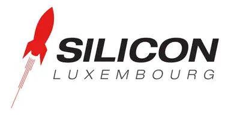

Silicon Luxembourg · 3 Dec 2025Luxembourg Software Testing Event: Key Takeaways From The Heart Of IT
Post-event coverage looking back at the 7th edition of LSTE and the conversations around software testing, AI and quality.
Read article